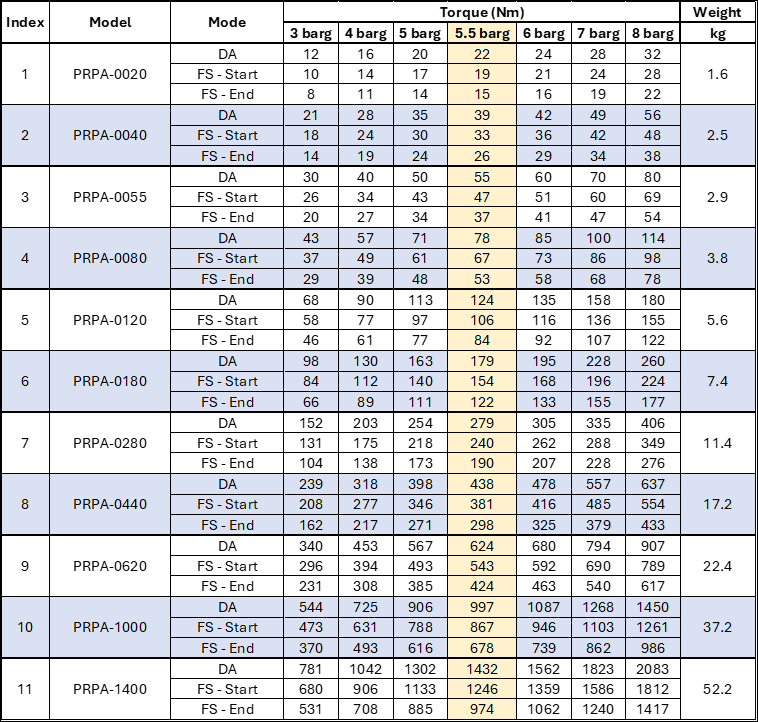
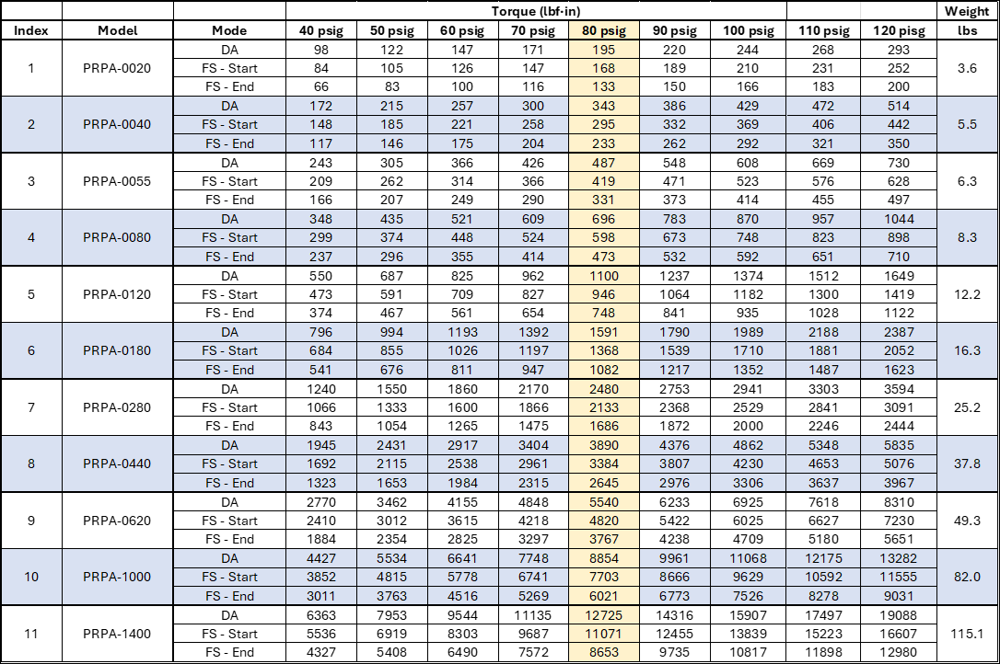

PRPA - Puretork Rack & Pinion Actuator
Delivering more torque, more safety, and more reliability in every stroke.

All-in-One Solution: Double-Acting & Fail-Safe in One Actuator
DA — Double Acting (Normal Operation)
- 100% torque output
FS — Fail-Safe / Single Acting (During Air Supply Loss)
- Start: 86% torque
- End: 68% torque
Mode flexibility: Supports Fail-Close (90→0°) and Fail-Open (0→90°) without disassembly — no springs or pistons need to be removed or reinstalled.
Overview
- Springless air fail-safe: eliminates bulky springs and associated wear/break/handling risks to enhance safety.
- All-in-one flexibility: one actuator supports double-acting and single-acting (fail-safe) modes with no internal changes required.
- Lower operating cost: up to 50–70% less air consumption; one SKU covers multiple configurations to reduce inventory.
- More torque: consistent 100% torque in normal operation and double the fail-safe torque during air loss vs. spring return.
- Compact & lightweight: up to 50% lighter than spring-return designs.
- Hygienic & durable: no spring means ambient air does not enter the actuator; only clean instrument air is used.
Read / Hide Overview
The PRPA (Puretork Rack & Pinion Actuator) is a next-generation quarter-turn pneumatic actuator with a proprietary springless air fail-safe design. It eliminates bulky springs, reducing the risk of wear or breakage and improving overall safety.
The PRPA offers configuration flexibility: one actuator supports both double-acting and single-acting (fail-safe) modes with no internal changes. This reduces complexity, minimizes inventory, and lowers operating costs.
Compared to traditional spring-return actuators, the PRPA consumes 50–70% less air and is up to 50% lighter. It also delivers more consistent torque — maintaining 100% torque in normal operation and providing up to twice the fail-safe torque during air supply loss.
Its sealed, positive-pressure design prevents microbial contamination, ensures washdown/CIP compatibility, and extends service life by reducing wear. Combining safety, efficiency, and sustainability, the PRPA sets a new benchmark in rack & pinion pneumatic actuator performance.
Torque Tables
Torque Chart

Metric Table
Imperial Table
Technical Specifications Disclaimer: All product specifications, including torque, weight, and performance values, are provided for reference only and are subject to change without prior notice. Actual performance may vary depending on operating conditions such as pressure, temperature, media, and installation environment. Puretork reserves the right to modify product design or discontinue products at any time without obligation. For the latest information, please contact Puretork directly.